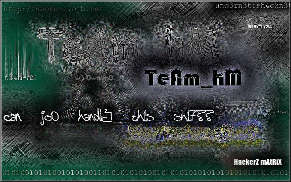

Sometimes i think its all just a game...
and sometimes i think its the key to fully living...
Some tell me im wrong..
some tell me im right...
But theres always a voice that keeps us going...to learn more...to strive more...to put more effort towards learning...
Im learning..i learn more everyday...and nothing is stopping me...
thats because nothing can....we are unstopable...nothing can cease our exsistence...
nothing...
And that, my friends, is what i feel...every time i hit the power button on my machine...
and yet, still i wonder....Is it worth it?
But until we find out....if we ever do...we must go on...defacing websites to get our point across...because no one else cares or gives a shit about what we think...
its time for a change...

t3am_hm. Making a stand. Rising.
Until we post our opinion again....Goodbye.
t3am_hm.